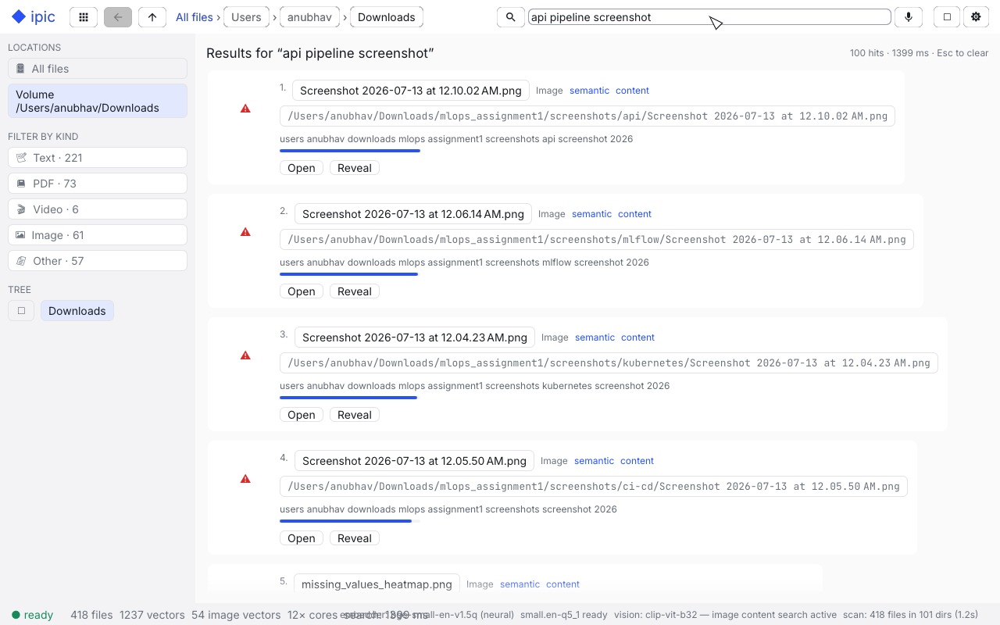

- Cut per-request generation cost by 60%: token-level cost tracing, prompt caching, bounded parallel fan-out.
- 99.5% of output ships with zero human review — schema-validated, bounded self-correction.
- Two-stage guardrail (batched judge, then adjudicator) stops prompt injection and credential leaks for at most 2 extra LLM calls per clean request.
- Merges clear unit + BDD suites, SonarQube (≥90%), Trivy HIGH/CRITICAL.
Building production AI systems
Anubhav Agrawal
I care about the whole machine, not just the model: training, inference, serving, deployment. Building something from nothing 0 -> 1, then scaling it from 1 -> 100, is the part of engineering I enjoy most. And I can't leave a working system alone — there's always a faster version of it.
M.Tech, AI & MLBITS Pilani · 2025—2027
B.Tech, CSEBIT Durg · 2019—2023
$200K+ARR product owned end-to-end
60%per-request cost cut on a live LLM service
2fixes merged upstream — ONNX Runtime, PyTorch
500+concurrent users served in production
01Work
Two production AI systems owned end-to-end. The numbers on each card are the numbers they run at.
LLMs · Retrieval · Production
read case study →
Computer Vision · Medical AI
read case study →
Adaptive RAG — a stateful interviewer that listens
Retrieval and reasoning core behind an AI interviewer that adapts in real time: three parallel retrieval paths, hybrid search, cross-encoder re-ranking, an eval harness as the source of truth.
0.95Recall@5
0.8sp50 latency
−68%faster
500+users
Real-time blind X-ray image super-resolution
Super-resolution and denoising on live cath-lab feeds, owned from model R&D through INT8/FP16 quantization to TensorRT/C++ serving, plus the QCA pipeline cardiologists use mid-procedure.
$200K+ARR
600+FPS · RTX 4090
−70%latency
0.94Dice · QCA
04About me
- Owned AIMAG ($200K+ ARR) from datasets through release after clinical trials.
- PyTorch → ONNX → TensorRT, INT8/FP16: sub-5 ms/frame for 4× upsampling on RTX 4090.
- QCA pipeline in <4 s; U-Net++ at 0.94 Dice; led 6 engineers.
- Co-inventor: granted patent (No. 604176) + 2 pending in X-ray enhancement.
02Writing
The math is shown and every number is measured.
Performance
Scaling a vector index to 350,000 files: sharding, backpressure, and a CLIP vision lane
Part 3 of the ipic build log: per-root shards, bounded-channel backpressure, a compute budget, and measured results at 350k-file scale.
Part 1Serving an LLM on a MacBook Pro: mlx-lm vs llama.cpp, from 1 user to 32
Both engines under one fairness contract: 45–56 tok/s single-stream, throughput flat from 1 to 32 users, and crash forensics that find the lock.
Part 2Multi-instance LLM serving: why 3× the memory bought only 9% more throughput
K process-isolated instances behind one queue: +9% for 3× the RAM. One instance already saturates the M4 Pro's memory bus.
InferenceHow INT8 quantization works: calibration, error bounds, and why accuracy barely drops
The affine map derived, the s/2 error bound, three calibrators that disagree on purpose, and the per-channel trick worth +6 dB.
RetrievalCosine similarity vs Euclidean distance: what matters for image search
The cosine/L2 proof, what precision 1.00 with recall 0.87 actually diagnoses, and when exact search dies by arithmetic.
Medical CVClass imbalance in medical segmentation: why cross-entropy fails and Dice loss works
The target vessel is 0.39% of the pixels; the standard loss trains a model that's great at everything else. Derived, then fixed.
Deep LearningHow neural style transfer works: VGG features, Gram matrices, and receptive fields
Style transfer from zero, its key object provably discarding all position information (measured: 1.7e-18), and the receptive-field arithmetic.
RustOn-device semantic file search in Rust: the ipic engine architecture
Part 1: three retrieval lanes fused by RRF, an i8-quantized mmap'd vector store, whisper on CPU, crash-safety by job state.
Hybrid SearchHybrid search with reciprocal rank fusion: semantic, keyword, filename, and vision lanes
Part 2: weighted RRF derived from requirements and computed on a worked example. No re-ranker, 4–10 ms.
03Open source
Fixes upstream into the engines I depend on, and side projects with real inputs and real outputs.
Upstream contributions
onnxruntime
ReshapeFusion crash fix — node-produced shape inputsSession creation failed on runtime-computed shapes; the fusion now handles them instead of asserting.
merged · #33091
pytorch
int32 quantization exports as valid opsONNX export emitted an invalid QuantizeLinear; it now emits ops the standard can run.
in main · #200180
mlx-lm
Prompt-cache byte budget, enforced continuouslyThe budget was checked only at admission; trimming now runs after every serving step and /health reports stalls.
open · #1944
loop
web_fetch / web_search with an SSRF-hardened clientFor a Rust agent harness: rejects private and cloud-metadata targets, re-validates redirects, pluggable search backends. The acknowledged foundation of loop's shipped web tools (merged in #59, which builds on this PR).
open · #44
Side projects

ipic — a file manager that understands your files
Fully on-device RAG over your entire home directory: ranked results across text, PDFs, audio, video and images. Rust, local whisper, i8-quantized vectors. Shipped as a macOS DMG.
RustHybrid RAGWhisperSQLite FTS5ONNX
More repositories
ArterySegCoronary segmentation, U-Net++/ResNet50, TensorRT export→
find-me-lensImage retrieval over FAISS, five CNN backbones benchmarked→
pytorch-cpp-tensorrtPyTorch → ONNX → TensorRT → C++, one notebook per stage→
no_more_BWsECCV'16 vs SIGGRAPH'17 colorization, side by side→
neural-style-transferGatys 2015 reimplemented from scratch→
Panorama-image-stitchingMatching → homography → warping → blending, end to end→
05Skills
Languages & ToolsPython, Rust, Bash, Git, Linux
Model OptimizationPyTorch, ONNX (dynamic shapes, control flow, opsets), ONNX Runtime, TensorRT, trtexec
Quantization & On-DeviceINT8/FP16 PTQ with calibration, 4-bit GGUF/MLX — llama.cpp, mlx-lm
ML FrameworksPyTorch, OpenCV, Scikit-learn, XGBoost, NumPy, Pandas
PlatformDocker, GitLab CI/CD, AWS (EC2), FastAPI, Grafana / Loki / Mimir / Tempo, MongoDB, SQLite
06Contact
Open to AI engineering roles and collaborations — especially systems where inference has to be fast, measured, and honest. Email is the fastest way to reach me.